Transistors

The purpose of this page is to record and outline important course concepts and principles in Electrical Engineering. It is important for Electrical Engineers to be familiar with the following
concepts in order to practice excellent approach in design and analysis throughout their careers. The course concepts that will be listed is a brief summary and does not encapsulate the full extent of
Electrical Engineering. This list will be updated throughout my education.
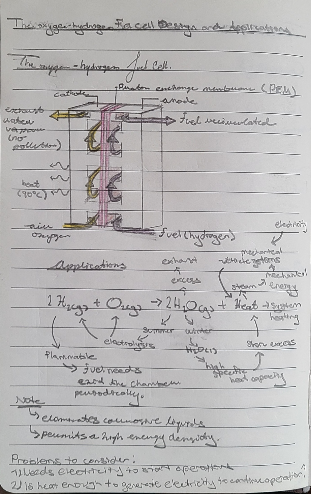
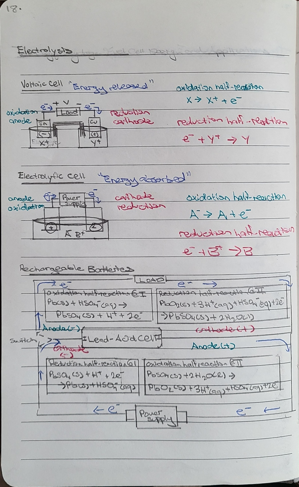

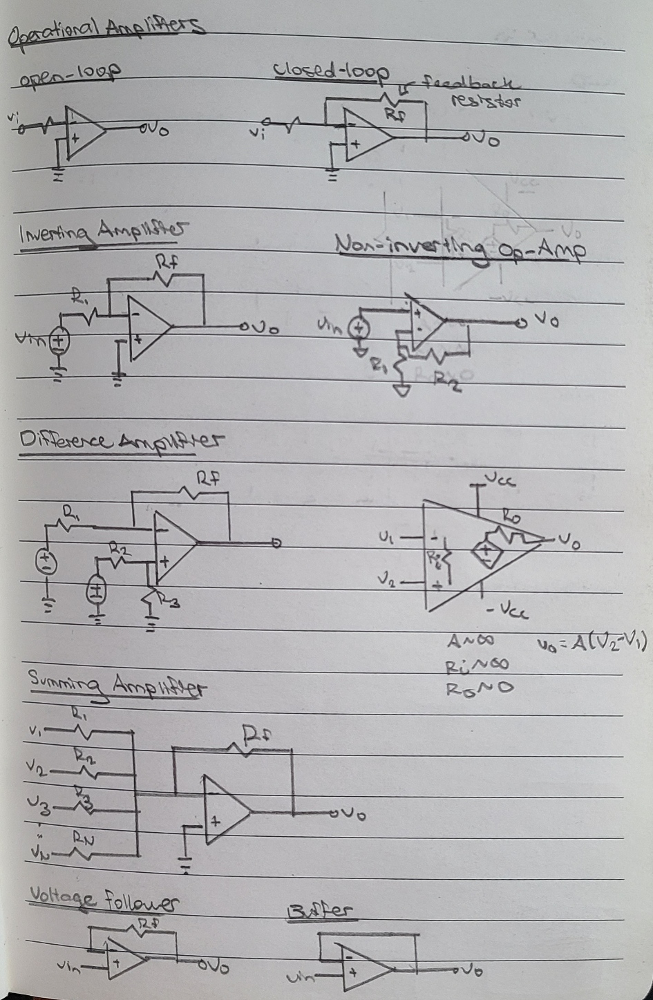
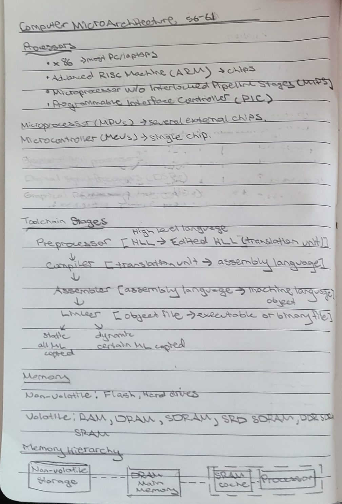
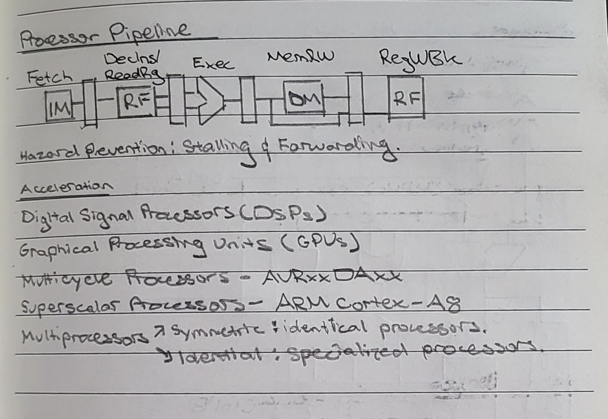
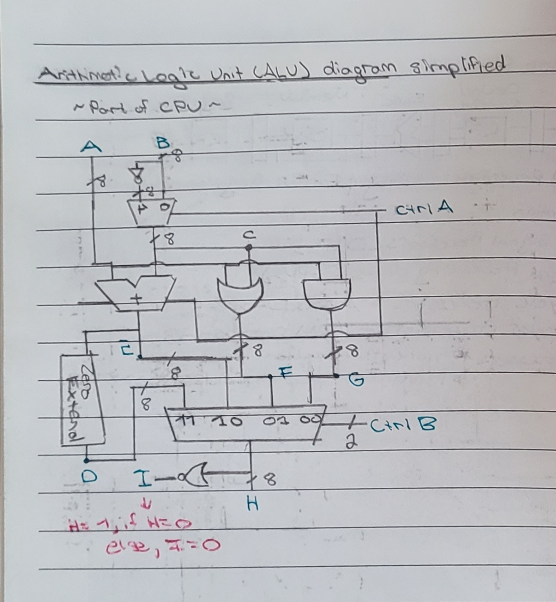
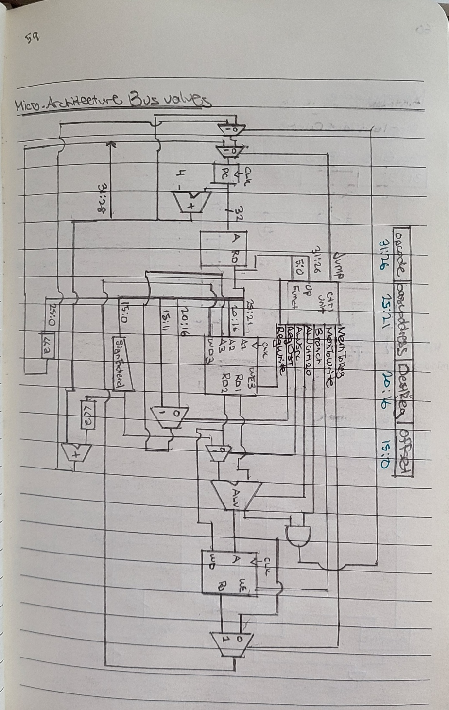

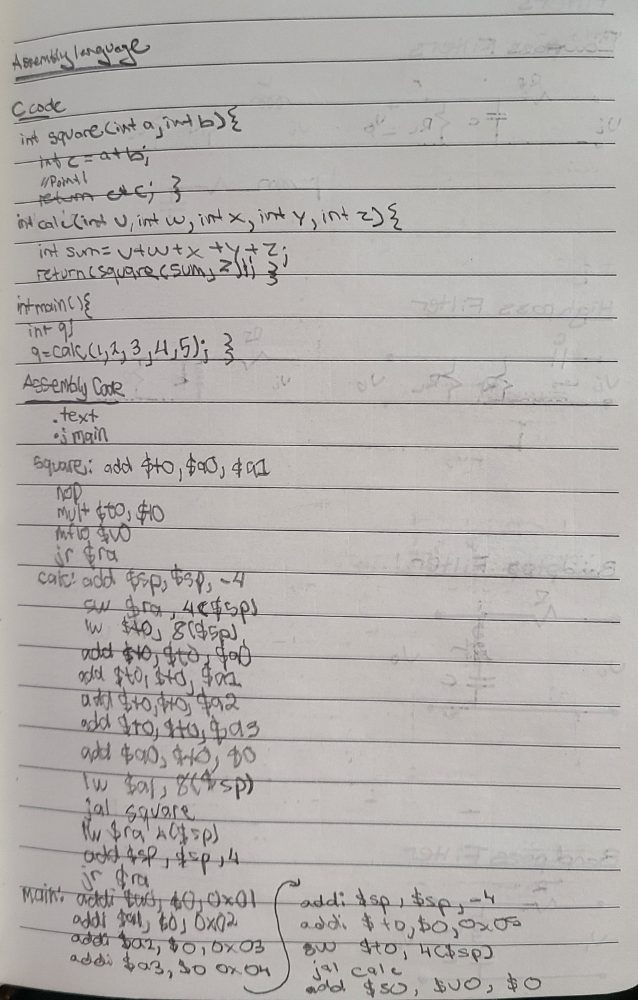
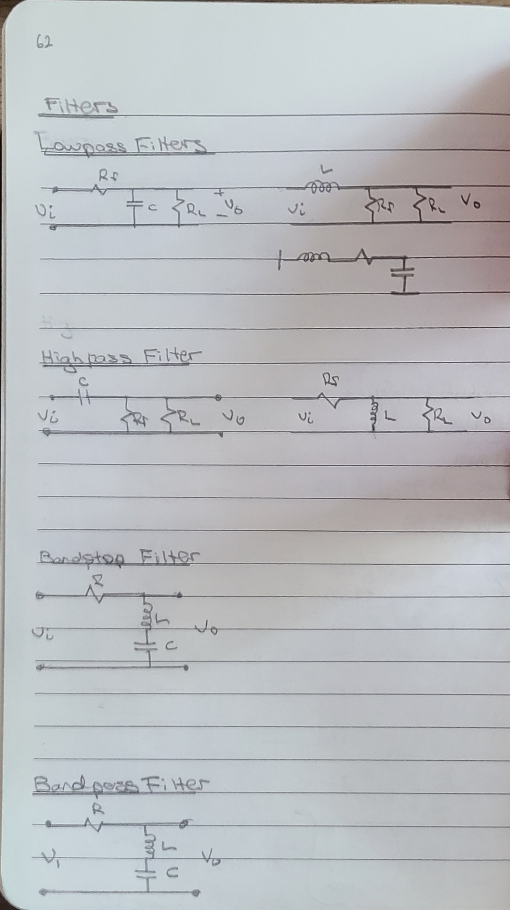
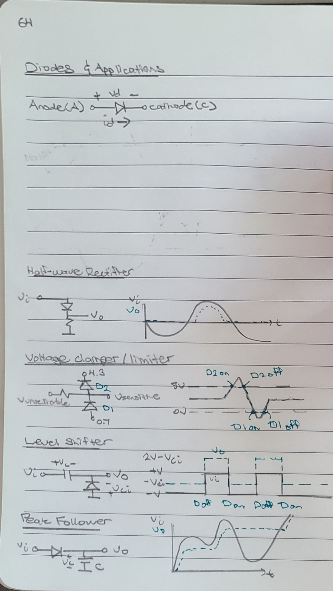


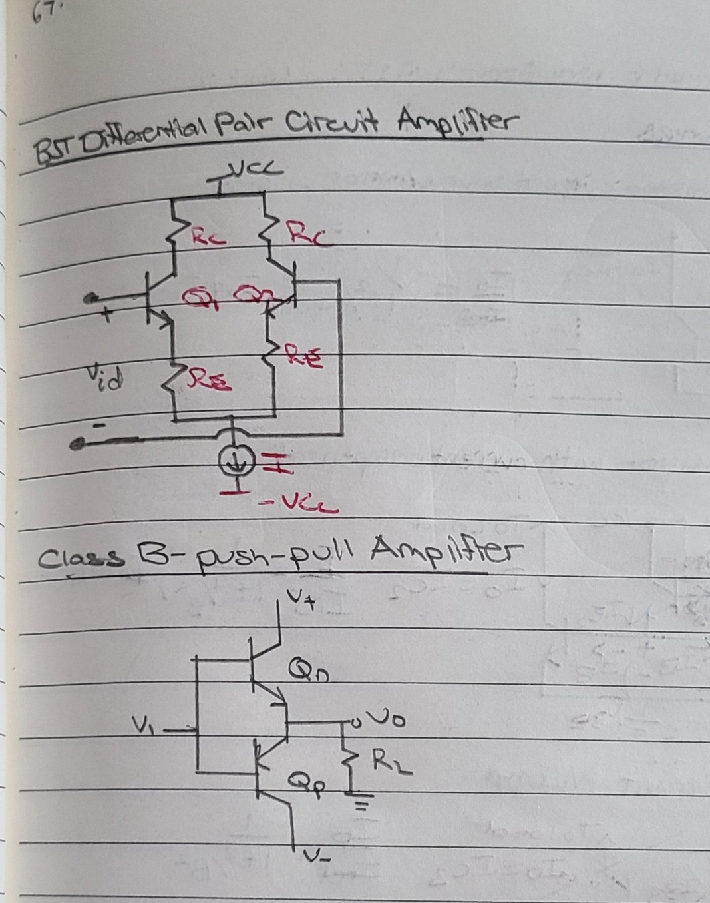
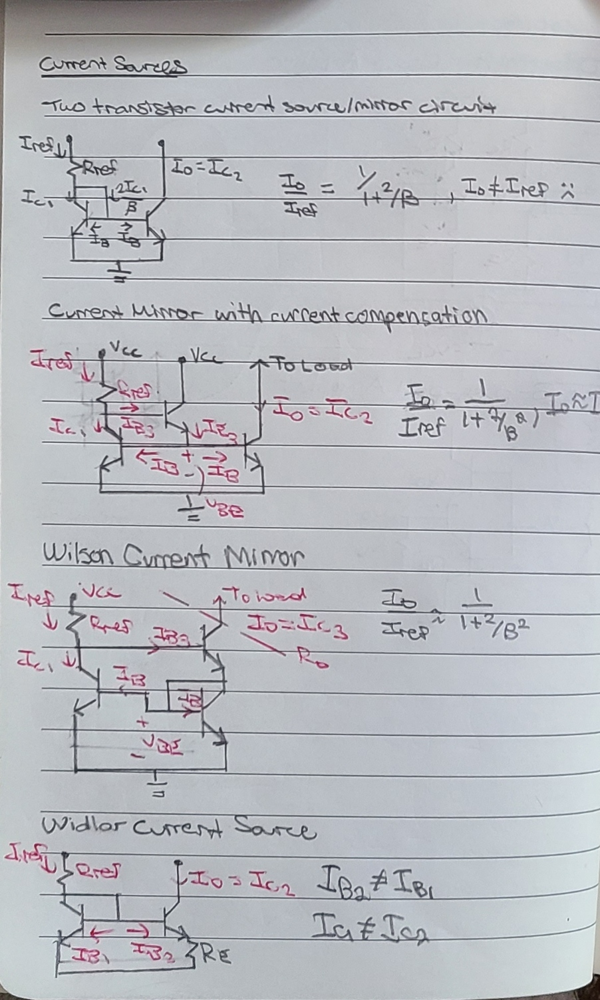
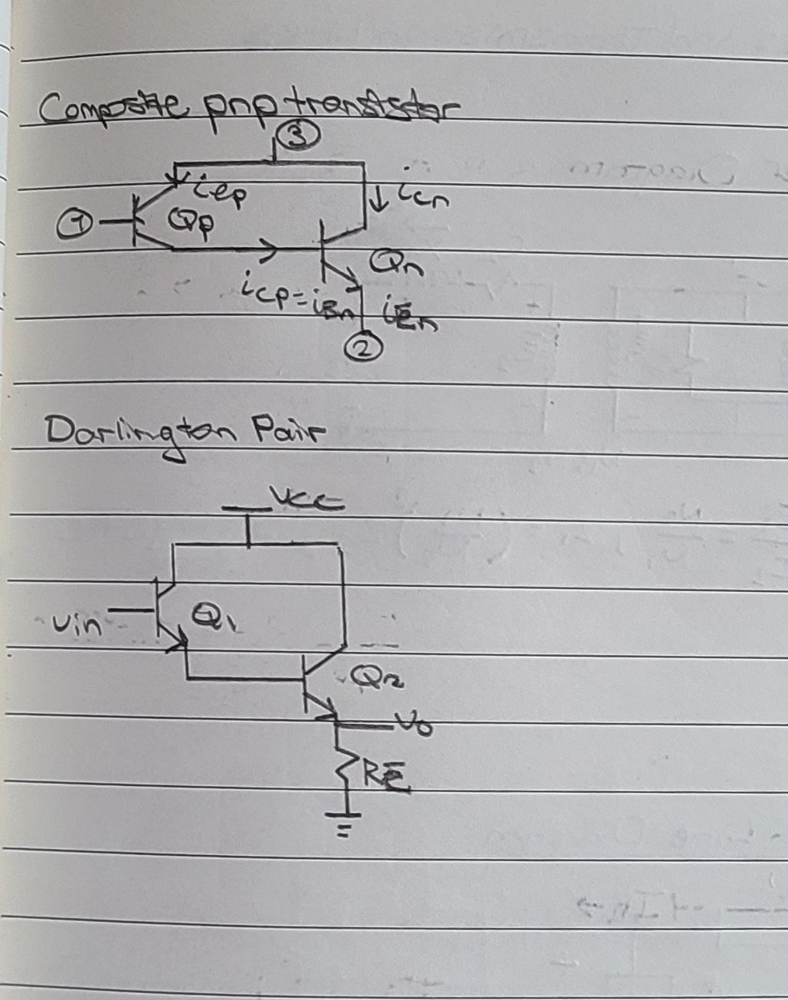

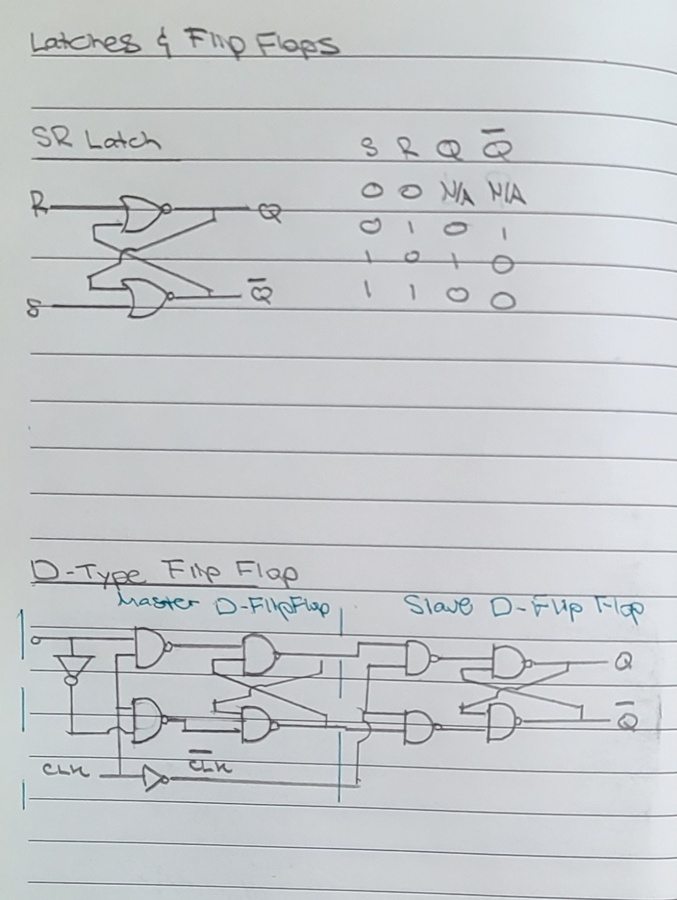